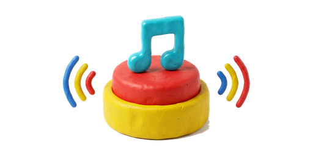
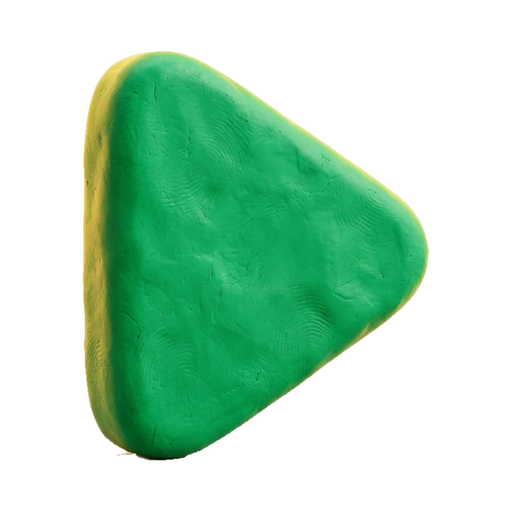
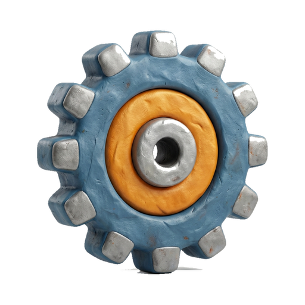
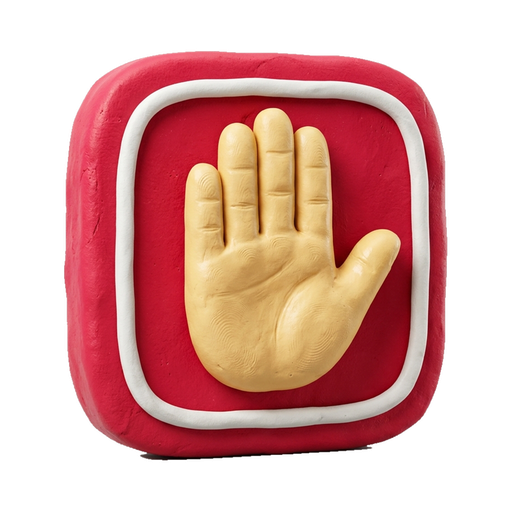

おとボタン

はじめる

せってい

ぜんぶとめる
おとの おおきさ
かぎ
せってい
もどる
せってい
できた
ぜんたい
よこに ならべる かず
うごきを へらす
おとの おおきさに かぎを かける
あんしょう ばんごう（4けた）
かえる
せっていの もちだし
かきだす
よみこむ
じぶんの おんがく
この きかいに いれた おと
ボタン
＋ ボタンを ふやす
あんしょう ばんごうを いれてください
1
2
3
4
5
6
7
8
9
←
0
やめる
ちがいます